Визуализация для клиента: инструкция по генерации
Как из проекта в «Раскрое» получить реалистичную картинку готового интерьера: с фотографией комнаты клиента и без неё. Дополнение к общему руководству. Скриншоты сняты на демонстрационном проекте (стена 4200×2600, бамбук 8190); комната на фото — условная заглушка.
Две дороги
Программа сама картинку не рисует. Она готовит набор файлов для нейросети: схему, где что должно стоять, описание проекта с материалами и образцы. Реалистичный кадр дорисовывает уже нейросеть, которая принимает картинки и умеет их генерировать. Точная геометрия (где панель, где стык, где LED, где проём) берётся со схемы.
| С фото | Без фото | |
|---|---|---|
| Когда | Клиент прислал снимок своей стены или комнаты | Фото нет, нужна «картинка будущего интерьера» |
| Основа | Настоящее фото | Серый макет пустой комнаты, который рисует программа |
| Что делаете вы | Отмечаете 4 угла стены, нажимаете «Наложить» | Нажимаете «создать макет», описываете комнату словами |
| Что делает нейросеть | Рисует ту же комнату, но с установленными панелями | Строит интерьер по макету и вашему описанию |
| Результат точнее | Да: комната настоящая, меняется только стена | Менее предсказуем: мебель и свет придумывает нейросеть |
1. Подготовка проекта (до генерации)
Схема на фото строится из текущего проекта, поэтому сначала доведите раскладку. Чек-лист:
- Размеры стены и проёмы введены верно (разделы 01 и 03).
- Материал и расцветка выбраны (раздел 02): образцы расцветок уйдут нейросети в архиве.
- Цвет профилей выбран (раздел 02): он зафиксируется в задании.
- Стыки и LED расставлены. Стыки на схеме будут именно такими.
- Откосы проёмов настроены. Они нужны, только если вы хотите, чтобы нейросеть отделала их материалом.
- Если на фото несколько стен (угол комнаты), все они уже созданы в проекте.
2. Генерация с фото
Какое фото взять
- На снимке видна вся стена, а лучше и её четыре угла: потолок, пол, соседние стены. Если угол не влез в кадр, есть выход (см. «Углы за краем фото»).
- Снимайте прямо на стену или под небольшим углом. Чем сильнее перекос, тем сложнее нейросети удержать перспективу.
- Фото обычное, в хорошем свете, без сильных засветов. Размер не важен, программа сама уменьшит превью.
- Если комнату сняли с нескольких точек, загрузите все: у каждого фото своя разметка и свой запрос к нейросети (см. «Несколько ракурсов»).
Это рекомендации по опыту работы с генераторами, а не требования программы: она примет любое фото.
Загрузка фото
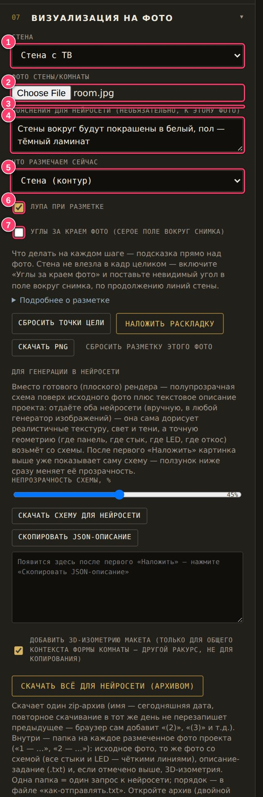
- Стена — какую стену проекта размечаем (при нескольких стенах).
- Фото стены/комнаты — нажмите «Choose File» / «Выберите файл» и укажите снимок.
- Фото проекта — список фото; у каждого своя разметка.
- Пояснения для нейросети — по желанию (см. ниже).
- Что размечаем сейчас — по умолчанию «Стена (контур)». Начинайте с неё.
- Лупа при разметке — включена по умолчанию, очень помогает.
- Углы за краем фото — включайте, только если угла нет в кадре.
После загрузки фото появится справа в блоке «Визуализация на фото». Над ним строка-подсказка («Шаг 2 из 3…») подскажет, что делать дальше.
Порядок расстановки точек
| Точка | Куда ставить | Подсказка программы |
|---|---|---|
| 1 | Левый верхний угол стены: где стена сходится с потолком слева | «левый верхний угол стены — где стена сходится с потолком слева» |
| 2 | Правый верхний угол: где стена сходится с потолком справа | «правый верхний угол — где стена сходится с потолком справа» |
| 3 | Правый нижний угол: стык стены с полом справа | «правый нижний угол — стык стены с полом справа» |
| 4 | Левый нижний угол: стык стены с полом слева | «левый нижний угол — стык стены с полом слева» |
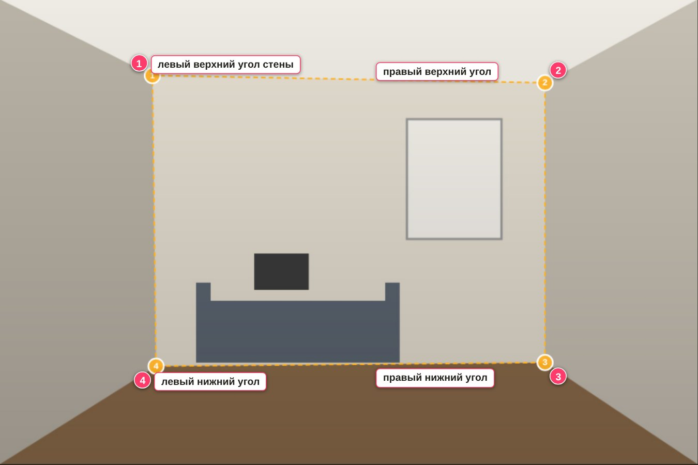
- Кликните по фото в первом углуПрограмма сама подскажет: «точка 1 из 4: кликните левый верхний угол стены…». Каждый следующий клик ставит следующую точку.
- Включите ориентир лупойКогда курсор над фото, у него появляется увеличенный круг со снимком места в полном разрешении. Ставьте перекрестие ровно в угол, где сходятся стена, потолок или пол.
- Поправьте точки, если нужноЛюбую точку можно перетащить мышью. Точный контур стены важен: по нему на фото ложится схема.
- Ошиблись?«Сбросить точки цели» стирает точки текущей цели, а ↶ Отменить и Ctrl+Z отменяют шаг. Контур со скрещёнными сторонами программа не примет: появится сообщение, и точки нужно расставить заново по часовой стрелке.
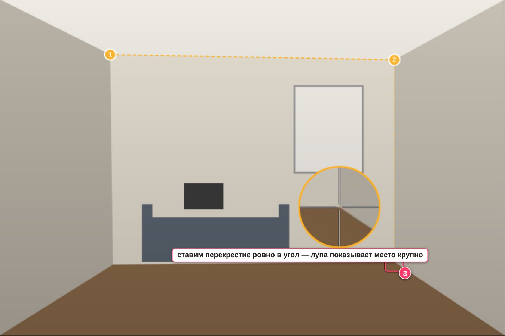
Наложить и проверить
- Нажмите «Наложить раскладку»Раздел 07, кнопка выделена. Программа проективно натягивает схему на ваш контур: с учётом перспективы.
- Проверьте результатСхема должна совпасть с краями стены, проёмы лечь на окна и двери. Если нет, перетащите точки и нажмите «Наложить» ещё раз: слой стены заменится.
- Подберите прозрачностьПолзунок «Непрозрачность схемы, %» (15–80) меняет вид схемы поверх фото сразу. Для нейросети обычно удобна средняя прозрачность (совет): и фото видно, и панели читаются.
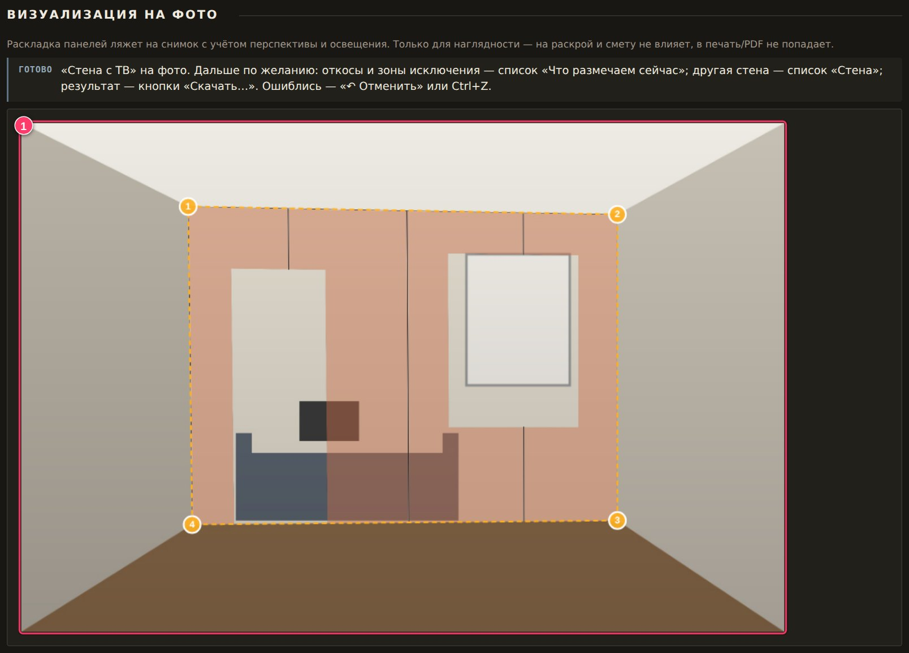
Откосы, зоны исключения, углы за кадром, несколько стен
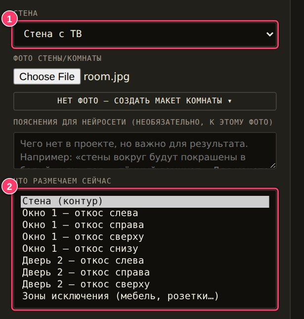
- Стена — какую стену проекта размечаем.
- Что размечаем сейчас — «Стена (контур)», затем грани откосов («Окно 1 — откос слева», …) и «Зоны исключения».
Откосы. Если у проёма есть откосы, в списке появится цель на каждую видимую грань. Отмечать их необязательно: неотмеченные останутся на фото как есть. Чтобы отделать откос материалом, выберите грань и обведите её четырьмя точками по контуру, по порядку, без перехлёста (с какого угла начинать, не важно). Затем «Наложить раскладку» — откос ляжет вместе со стеной.
Другая стена на этом же фото (угол комнаты). Переключите список «Стена», отметьте её 4 угла и нажмите «Наложить». Вернувшись к уже наложенной стене, вы снова сможете двигать её точки.
Зоны исключения. Выберите цель «Зоны исключения (мебель, розетки…)» и протяните прямоугольник поверх тех мест, куда ничего не должно лечь: розетки, выключатели, мебель перед стеной. Эти места останутся как на фото. Клик по зоне удаляет её. Нажимать «Наложить» не нужно: зона применяется сразу.
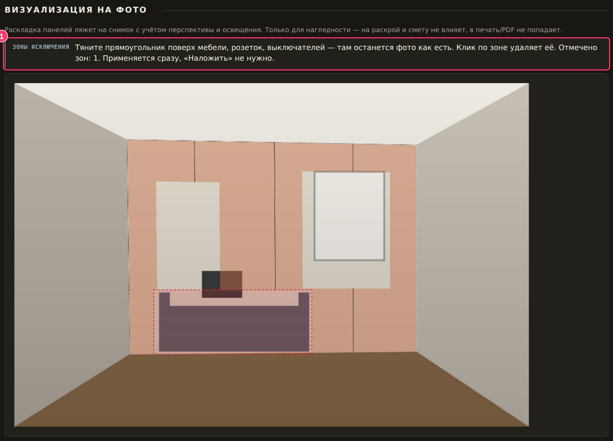
Углы за краем фото. Если стена не влезла в кадр, включите флажок «Углы за краем фото»: вокруг снимка появится серое поле, и невидимый угол можно поставить в него по продолжению линий стены.
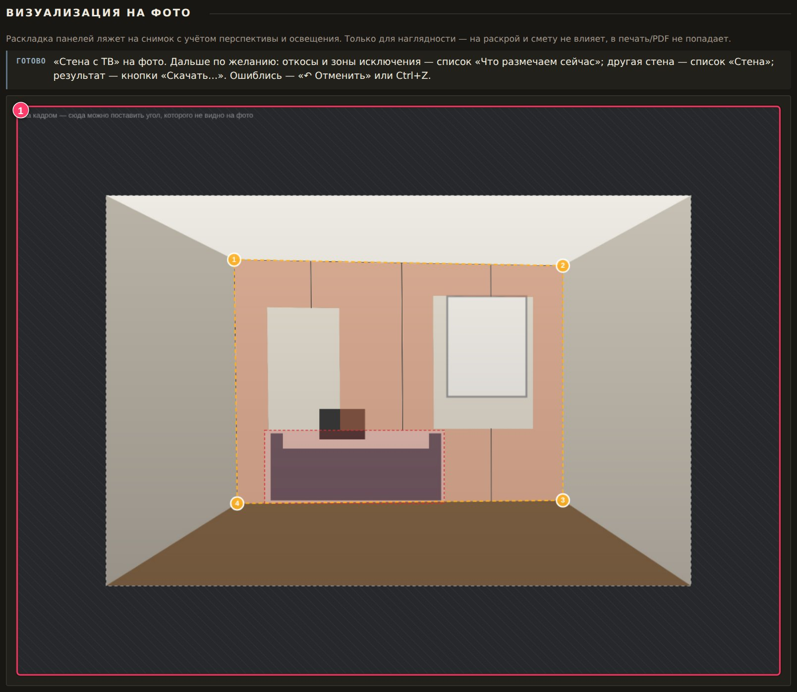
Пояснения для нейросети
Поле «Пояснения для нейросети (необязательно, к этому фото)». Туда пишут то, чего нет в проекте, но что важно для результата. Например: «стены вокруг будут покрашены в белый», «пол — тёмный ламинат», «диван не трогать». У каждого фото свои пояснения. Пояснения идут в задание как пожелание: если они противоречат схеме (например, «убери окно»), схема главнее.
Скачать архив для нейросети

- Наложить раскладку — должна быть нажата хотя бы раз.
- Скачать PNG — готовое плоское изображение для просмотра; нейросети его не отдают.
- Сбросить разметку этого фото — стереть всё.
- Непрозрачность схемы — влияет на файл со схемой.
- Скачать схему для нейросети — только один файл «схема-для-нейросети.png».
- Скопировать JSON-описание — задание текстом в буфер обмена (для нейросетей, которые принимают только текст).
- Добавить 3D-изометрию макета — флажок. Это общий вид комнаты с другого ракурса, только для понимания формы. Если в проекте одна стена, его можно снять, чтобы не путать нейросеть.
- Скачать всё для нейросети (архивом) — главная кнопка: один zip с готовым заданием.
Имя архива — сегодняшняя дата (например, 061026.zip). Повторное скачивание в тот же день браузер назовёт «(2)», «(3)». Архив собирается за секунды, на кнопке на время появится «Считаю…».
Что внутри архива
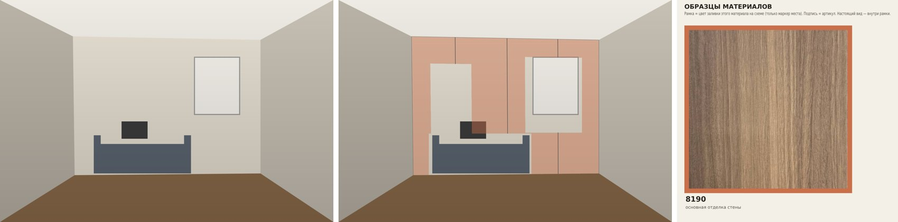
3. Генерация без фото
- Откройте панель макетаРаздел 07, кнопка «Нет фото — создать макет комнаты ▾» под полем «Фото стены/комнаты».
- Выберите стену, ракурс и расстояниеСтена — в списке «Стена» выше. Ракурс: «Прямо на стену», «Слева, под углом» или «Справа, под углом». Поле «Камера от стены» оставьте пустым («авто»).
- Нажмите «Создать макет и наложить раскладку»Программа нарисует макет, сама поставит 4 угла стены (по тому же порядку 1 → 2 → 3 → 4, вручную их ставить не нужно) и наложит раскладку.
- Опишите комнатуПоле «Пояснения для нейросети». Это главный рычаг: вместо фото нейросеть опирается на ваше описание.
- Скачайте архив«Скачать всё для нейросети (архивом)». Основа называется
макет-комнаты.png.
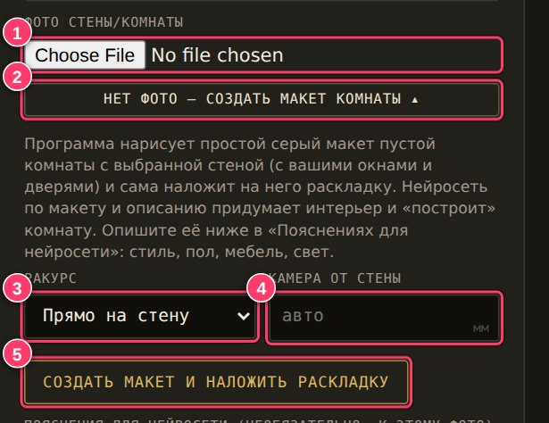
- Фото стены/комнаты — для макета не нужно.
- Кнопка раскрывает и сворачивает панель.
- Ракурс. Угол под 20° уменьшается сам, если стена узкая.
- Камера от стены, мм. Пусто = авто.
- Создать макет и наложить раскладку — один клик.
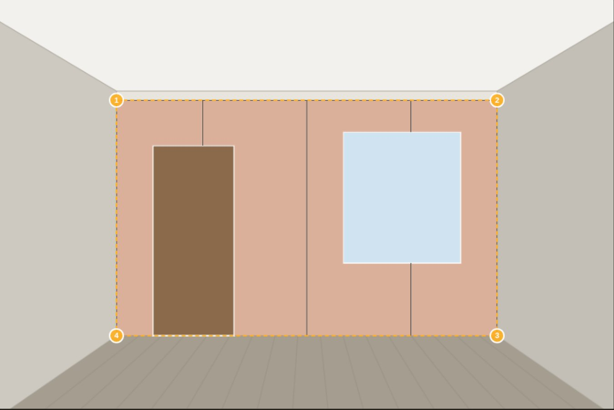
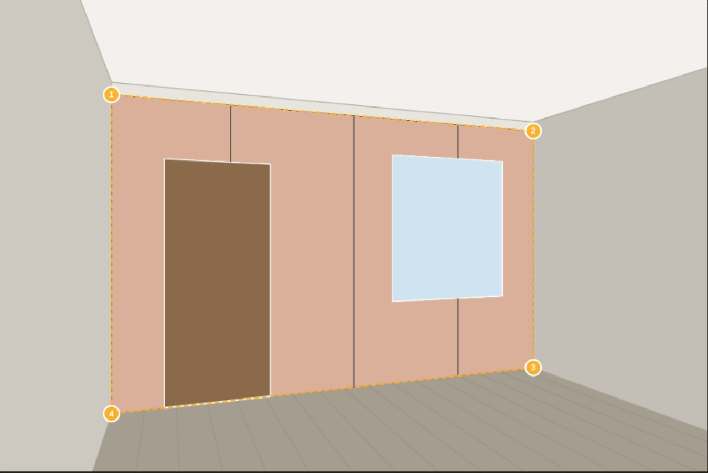
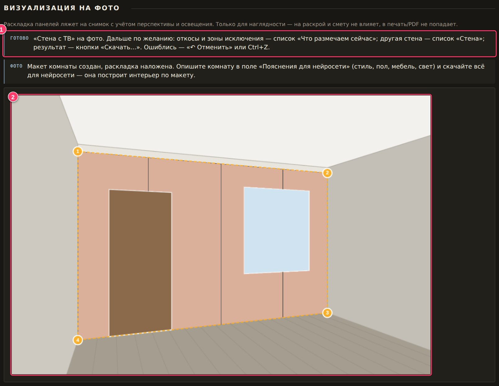
Как описать комнату
Достаточно 3–5 коротких фраз по схеме:
| Что | Пример |
|---|---|
| Стиль | современная гостиная, минимализм / скандинавский / лофт |
| Пол | светлый паркет «ёлочка» / тёмный ламинат / серый керамогранит |
| Остальные стены и потолок | стены белые, потолок белый с тонкой подсветкой по периметру |
| Мебель | серый диван у стены, низкий журнальный столик, торшер справа |
| Свет и время суток | тёплый вечерний свет, мягкий дневной из окна слева |
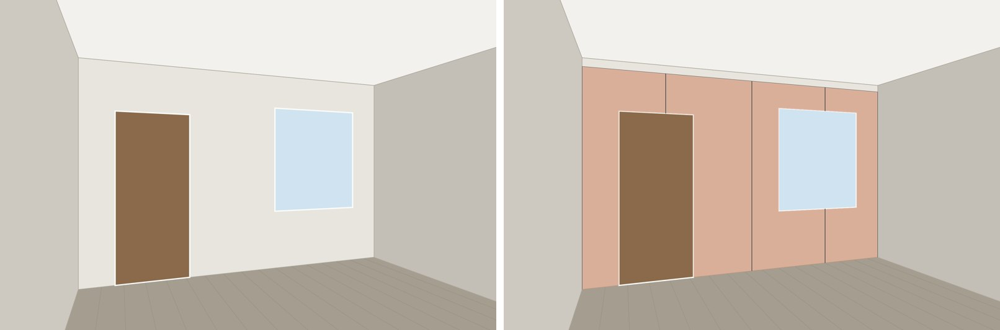
В задании для макета нейросеть получает указания: форма комнаты и ракурс как на макете; панели ровно по схеме; пол, потолок, мебель и свет по вашему описанию; мебель не заслоняет больше ~10 % панелей, стыки и LED; на местах светло-голубых и коричневых прямоугольников нарисовать настоящие окна и двери.
4. Передача архива в нейросеть
Для обоих вариантов (с фото и без) порядок один. Нужна нейросеть, которая принимает несколько картинок вместе с текстом и умеет генерировать изображения (например, чат-генератор изображений). Конкретная нейросеть на ваш выбор.
- Распакуйте архивДвойной щелчок по zip открывает его как обычную папку на Windows и macOS. Внутри:
как-отправлять.txtи папка (или несколько) вида «1 — room». - Откройте новый чат с нейросетьюИменно новый и чистый: прежние разговоры могут влиять на результат.
- Перетащите в чат ВСЕ файлы из папки «1 — …»Выделите всё внутри папки (Ctrl+A) и перетащите в окно чата или прикрепите кнопкой-скрепкой. Подпапку «образцы» можно перетащить вместе с файлами.
- Проверьте, что описание ушло«описание-проекта.txt» — это и есть задание. Если чат не принимает .txt, откройте файл, скопируйте весь текст и вставьте его в сообщение.
- Отправьте и дождитесь картинки.
Если чат ограничивает вложения
| Ограничение | Что делать |
|---|---|
| Не принимает .txt | Откройте «описание-проекта.txt», скопируйте весь текст и вставьте в сообщение (так предлагает и программа). |
| Не принимает папки | Достаточно файла «материалы.jpg»: образцы уже собраны на доске. Папку «образцы» можно не отправлять. |
| Мало вложений | Отправляйте по важности: 1) «схема-для-нейросети.png», 2) «фото.jpg» / «макет-комнаты.png», 3) «материалы.jpg», 4) текст задания. Остальное необязательно. Это совет, а не требование программы. |
| Не принимает длинный текст | Задание уже содержит short_prompt — короткую версию. Нажмите «Скопировать JSON-описание» и вставьте в чат только строку short_prompt, а картинки приложите. |
| Нейросеть только текстовая (без картинок) | Такая не подойдёт: ей нужна схема. Используйте генератор, который принимает изображения. |
Памятка из архива «как-отправлять.txt»
Как отправлять в нейросеть В архиве одна папка — всё для одного запроса к нейросети. 1. Откройте новый чат с нейросетью. Перетащите в него ВСЕ файлы из папки «1 — room» и отправьте. Описание-проекта.txt — это и есть задание (промпт): если чат не принимает .txt, скопируйте его текст в сообщение. 2. Если результат не устроил — попросите сгенерировать ещё раз в этом же чате. В папке есть «материалы.jpg» (доска образцов: рамка = цвет заливки на схеме, подпись = артикул) и папка «образцы» с крупными фото текстур — отправляйте их вместе с остальными файлами. Если чат не принимает папки, достаточно «материалы.jpg».
Несколько ракурсов одной комнаты
Если размечено несколько фото (или несколько макетов), в архиве будет по папке на каждое: «1 — …», «2 — …». Одна папка = один запрос. Чтобы все ракурсы выглядели одной и той же отделкой, программа предлагает такой порядок:
- Первая папкаВ новом чате отправьте все файлы из «1 — …».
- Сохраните удачный результат
- Вторая папка в том же чатеОтправьте все файлы из «2 — …» плюс первый удачный результат. В описании для второй папки уже сказано, что приложенный результат нужно использовать как образец внешнего вида панелей: текстуры, тона, масштаба рисунка, вида стыков и профилей. Ракурс и расположение панелей берутся только с фото и схемы второго запроса.
- Так же с остальными папками.
5. Проверка результата и правки
Когда нейросеть выдала картинку, сверьте её со схемой:
- Панели лежат ровно там, где на схеме есть заливка, и больше нигде.
- Стыки на тех же местах, не толще, чем в жизни (единицы миллиметров).
- Материал и цвет совпадают с образцами (а не с цветом заливки схемы).
- Подсветка есть только там, где её нарисовали в блоке LED.
- Цвет профилей и заглушек такой, как выбран в проекте.
- Окна и двери на месте, не закрыты панелью.
- В режиме «без фото»: мебель не закрывает панели.
Если что-то не так, попросите сгенерировать заново в том же чате (так советует и сама программа) или дайте короткое уточнение. Ниже примеры формулировок. Это советы по практике, не гарантия: нейросети по-разному реагируют на уточнения.
| Проблема | Что написать в чате |
|---|---|
| Стыки не по схеме | «Стыки панелей должны точно совпадать с тонкими линиями на схеме: не сдвигай, не добавляй и не убирай их.» |
| Стыки выглядят толстыми рейками | «Стыки между панелями — тонкие, единицы миллиметров, а не широкие металлические полосы.» |
| Цвет или рисунок панели не тот | «Возьми текстуру и цвет панелей с доски «материалы.jpg» (рамка того же цвета, что заливка на схеме), а не цвет заливки.» |
| Появилась лишняя подсветка | «Подсветки нет: убери любое свечение и тёплую засветку, кроме линий LED из схемы.» |
| Панель закрыла окно или дверь | «Окно и дверь должны остаться открытыми: панели только там, где на схеме есть заливка.» |
| (Без фото) мебель закрыла стену | «Передвинь мебель так, чтобы она не закрывала панели и стыки больше чем на десятую часть.» |
| (Без фото) комната не такая | «Сохрани геометрию и ракурс макета; поменяй только мебель и свет по описанию.» |
| Нейросеть обрезала кадр | «Не меняй кадрирование и пропорции исходной картинки; один итоговый кадр без коллажей.» |
6. Частые ошибки
| Что происходит | Причина и решение |
|---|---|
| Кнопки «Скачать…» серые | Не нажата «Наложить раскладку» (или не создан макет). Отметьте 4 угла и нажмите «Наложить». |
| Сообщение о некорректном контуре при «Наложить» | Стороны контура пересекаются или точки вырождены. Расставьте точки заново по часовой стрелке от левого верхнего угла. |
| Схема не легла на другую стену фото | Для каждой стены своя разметка: переключите список «Стена» и отметьте её углы отдельно. |
| Схема на фото осталась старой после правки проекта | Нажмите «Наложить раскладку» ещё раз. |
| После открытия проекта на фото нет разметки | Фото в проект не сохраняется. Загрузите то же фото заново; разметка подставится по имени файла. Переименованное фото сопоставьте кнопкой «Применить» в списке «Фото проекта». |
| Фото не вошло в архив | В архив попадают только фото, загруженные в этом сеансе. Загрузите его ещё раз. |
| Предупреждение «есть разметка для фото с тем же именем, но других пропорций» | Загружен снимок других пропорций (например, обрезанный). Нужен исходный файл или новая разметка. |
| Стена не влезла в кадр | Включите «Углы за краем фото» и поставьте невидимый угол в серое поле. |
| Нет 3D-изометрии в архиве, а флажок стоит | Изометрия ещё не построена: подождите пересчёта или снимите флажок. |
| Макет не сохранился в проекте | Так задумано. Нажмите «создать макет» ещё раз. |
7. Памятка на одну страницу
2. Раздел 07: загрузите фото.
3. Клик в углы по часовой: 1 левый верх → 2 правый верх → 3 правый низ → 4 левый низ.
4. «Наложить раскладку», проверьте.
5. По желанию: откосы, зоны исключения, пояснения.
6. «Скачать всё для нейросети (архивом)».
2. Раздел 07: «Нет фото — создать макет комнаты».
3. Ракурс → «Создать макет и наложить раскладку».
4. Опишите комнату в «Пояснениях».
5. «Скачать всё для нейросети (архивом)».
2. Новый чат.
3. Перетащить ВСЕ файлы из папки «1 — …».
4. Нет .txt? Вставьте его текст в сообщение.
5. Не устроило — «сгенерируй ещё раз» в том же чате.
6. Следующий ракурс — файлы папки «2 — …» + первый удачный результат.